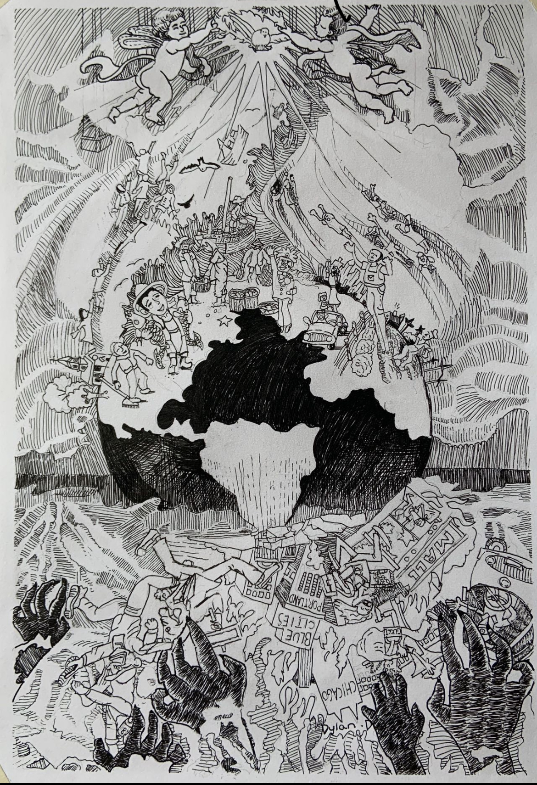
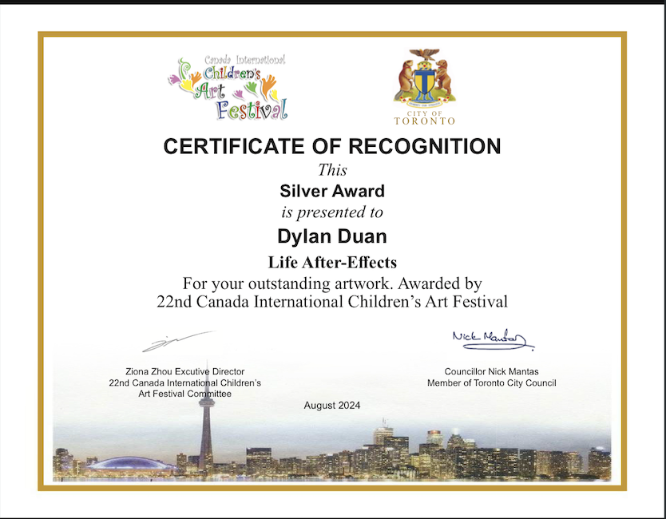
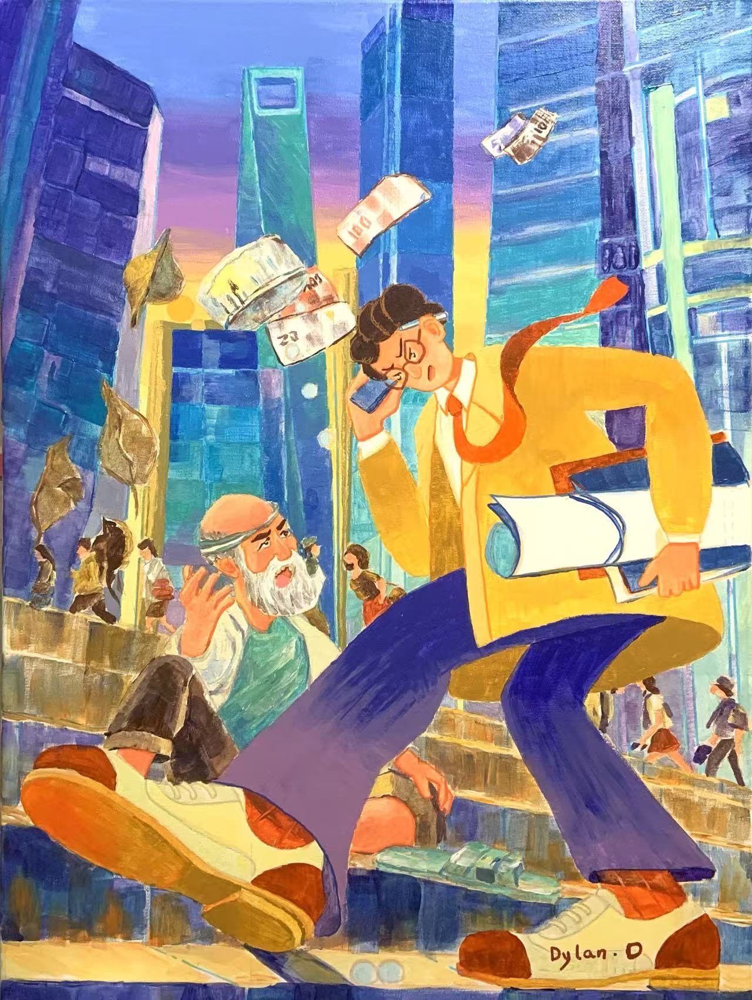
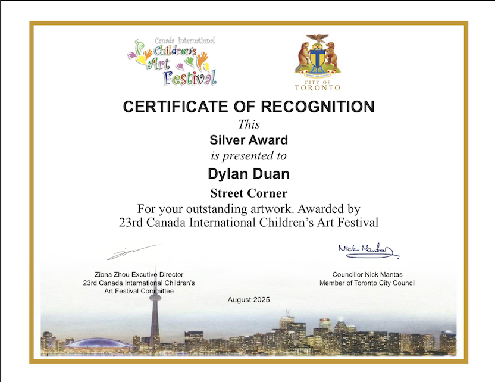
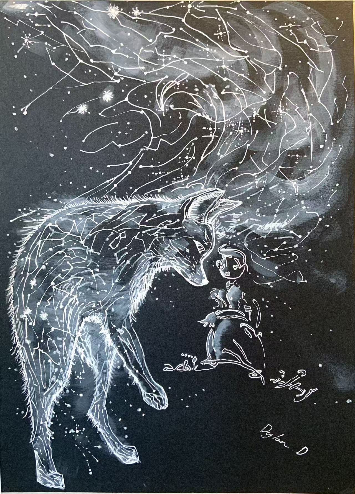
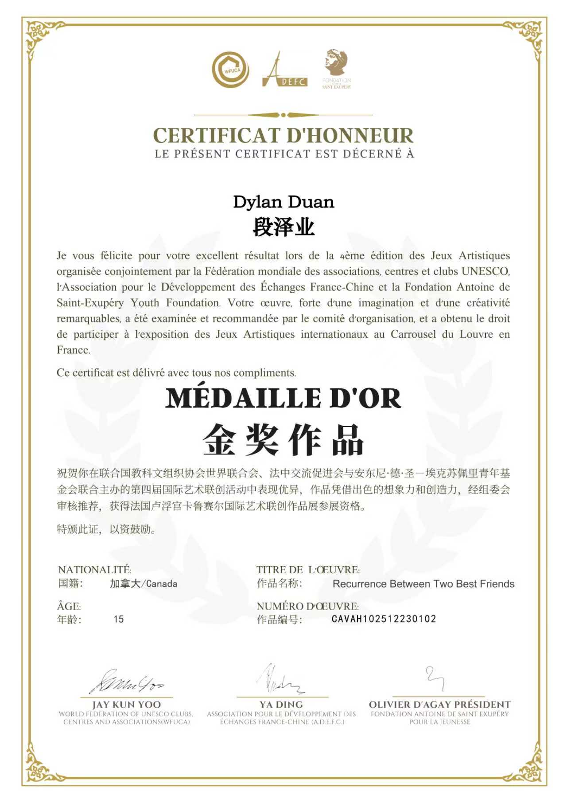

Visual Art Portfolio
Ink, gouache, and mixed media — from dense black-and-white narratives to large-scale colour compositions.

Ink on Paper
Pen & Ink — No Underdrawing
A sprawling composition imagining the turbulent aftermath — celestial figures descend while the world below churns through labour, chaos, and hope. Every corner teems with detail, drawn entirely freehand in pen and ink.


Gouache & Acrylic
Gouache & Acrylic on Canvas
A high-energy urban scene set against a glittering skyline at dusk. A rushing businessman, a resting elder, papers flying — the painting captures the collision of pace and stillness at a single city corner.


White Ink on Black Paper
White Ink & Gouache on Black Paper
A cosmic wolf composed of constellation lines and stardust faces a small solitary figure. Drawn in white ink on deep black paper, the piece meditates on the cyclical nature of friendship — vast, ancient, and quietly electric.
